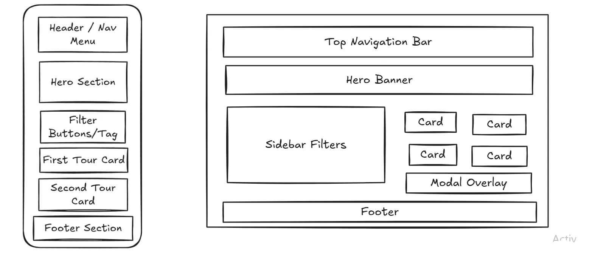

Site Name
Proposed Name: EcoAdventure Venezuela
Reasoning: The name clearly communicates the platform's core focus: sustainable eco-tourism, outdoor exploration, and adventure activities across Venezuela. It establishes immediate brand identity for both local and international travelers.
Optional Domain: ecoadventure-ve.org
Site Purpose
EcoAdventure Venezuela is a dynamic 3-page web application designed to promote sustainable local tourism. It serves as an interactive booking and informational guide featuring dynamic weather updates, a filterable tour package catalog powered by external/local JSON data, detailed modal dialogs for trip itineraries, and a reservation form with client-side validation and URL query parameter parsing on submission.
Target Audience Scenarios
- Scenario 1: "Where can I find guided hiking or mountain excursions tailored to my physical fitness level with clear itinerary breakdowns?"
- Scenario 2: "How can I filter tour packages specifically for coastal/beach activities and check live weather conditions before booking?"
Color Scheme
The chosen color scheme reflects Venezuela's diverse landscapes-from rainforests and Tepuis to Caribbean beaches-while maintaining WCAG AAA contrast ratios for accessibility.
Primary (Forest Green)
#1E4D2B
Used for: Main header, primary buttons, and hero background accents.
Secondary (Deep Teal)
#005A5A
Used for: Navigation links, call-to-action cards, and active filter tags.
Accent (Sultan Gold)
#F2B01E
Used for: Badges, rating stars, hover states, and key highlights.
Dark Neutral (Deep Slate)
#1A202C
Used for: Main headings, readable body copy, and modal backgrounds.
Typography
Heading Font: Montserrat
Montserrat provides a bold, modern typeface ideal for eye-catching headers (H1, H2, H3), hero captions, and navigation bar elements.
Body Text Font: Open Sans
Open Sans ensures clear legibility across desktop and mobile screens for tour descriptions, modal dialog itineraries, form fields, and table content.
Wireframes
Structural wireframe layouts showing how page components adapt between mobile viewports and desktop grid structures.
